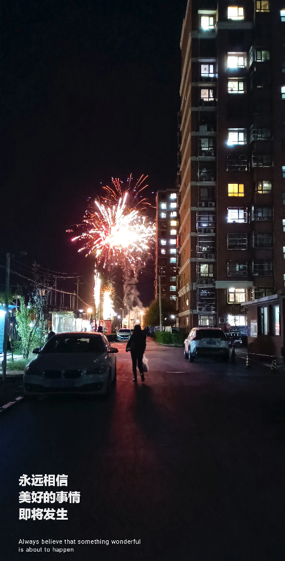

一直想写点什么，又总是提不起笔。
总想着什么时候能舒服舒服的喝着茶，敲着键盘，谈一谈这段时间的所思所想，后来发现，阻碍的不是环境，是自己纷乱的思绪。
就随便写点好了，想到哪里，就说到哪里。
新的旅途
最近，我成为了一名“打工人”。薪水够吃饱饭，em...娶媳妇可能有些勉强。
还是要努努力。一如既往的，来到了新环境，我还是像以前一样，怕犯错，怕沟通，怕落后拖后腿丢面子。要学习的东西真是好多呦。
说起来，和学校像吗？像。一样吗？好像又差很多。同事们有时候也会互称同学，大家都很和善。我努力的努力的想要融入这个新环境，有时候就像打了鸡血一样。
我也充分的暴露了新人的特点，无知，紧张还有...不好意思问。咳，怎么说呢，这也不懂，那也不懂的时候，问还是不问呢，问吧？总是打扰别人。不问吧？好像也没有别的解决办法。哈哈哈，越来越理解，学习是最简单的事儿，有时候呢，coding可能也是简单的事。对于技术人员来说，可能更是如此，喜欢写代码，不喜欢写文档...不是吗，我们也总喜欢生活在自己的世界里。
同样的，新环境里，最值得谈的当然是新朋友。
哈哈，谈朋友也不知道是不是有些臆想，毕竟这只是我的想法。来到这里，最开始遇到的应该是HR睿晰和IT程杰，可惜的是我刚来不久他们就都离职了...这真的是不好的信号...。然后是丹叔，mentor 金珂（虽然很早就加了微信，有聊过一些，，不过，，哈哈哈，总不能算正式认识吧）。然后是人事丽霞姐吧，她带着我到我的工位，可惜脸盲的我很多天都不确定哪个人是她...。然后是现在的“同桌”满禹，这个和善的“大个子”，我差点被他看似内向的外表骗到，时间长了才发现也是段子手。
后来的话，好像是，，秀红吧。刚来那天下午好像是组里开周会，我当时还在手足无措的看着新人入职须知xxx的。突然一个带着口罩的姑娘过来说“晓强，开会”。我连忙抬头说“哦”，然后起身。然后她说“带上电脑”。手忙脚乱的我，赶紧开始拔线、取电脑。哈哈哈，幸好她时不时回头看我有没有跟上，要不我可能连会议室都找不到在哪儿。（同样的，很长一段时间，我都对不上人和名字，哈哈哈，我只知道主持的那个人是她）。
那一天最后认识的，应该是高远。我记得那天周会结束之后，丹叔来到我的工位，带我去到高远那里，跟我说，“晓强，以后高远做你的副mentor，以后会带你熟悉一些工程上的东西”，我当然还是紧张，然后不好意思的说，“我加您下微信吧”（哈哈哈，这里当然也是怕脸盲的我回头就找不到mentor）。
那天下午，两位mentor把我带到“小黑屋”聊了聊，可惜的是，当时的我真的脑袋一片糊涂，还处在入职的兴奋和紧张里。我还记得，那天高远师兄对我说的是，“先降低期待，不要给自己太大压力”，这句话我到现在都十分印象深刻。如果没有那次谈话，我可能会在接下来的一段时间，处于长期的痛苦和迷茫吧。
那天之后，我就叫他们两个师兄，虽然他们也跟我说，直接叫名字就好，可是我实在是觉得怪怪的。我只是想着，你们教我那么多，我也没有什么办法感谢，只能称呼一声师兄，以示尊重和感激。
两位师兄的睿智，学识，沉稳，经验。实话说，我很羡慕，我想追赶。
Hackathon
以前，我也总是参加比赛的。印象深刻的大概有四次，比赛那种快速迭代和解决问题的方式无疑是快速成长的最好途径之一。同时，也是尽快融入团队的最好方式。
我之前确实没有想过，公司也会组织比赛的，至少不是这样类型的。我想象中也许会是那种户外运动的或者大家一起比比coding水平的比赛？哈哈，果然我还是太天真和幼稚。黑客马拉松，确实是很有geek的感觉。
新人加入团队，其实对团队是有风险的，因为不了解，不了解就会把握不好度，就会有不确定性。所以这里我还是很感谢我的mentor，总是愿意带我一起做一些事情。
比赛中，队长把控全局，大家提出各自的建议，到后面一起coding和调试，我很羡慕。而我只能努力的去跟上大家的节奏。
一开始呢，总是会犯一些错误，因为不熟悉，把之前在学校一些不好的习惯带入了进来。所以呀，碰壁永远是纠正一个人最好的方式，哈哈哈，尝到苦头，就知道什么是对的了。
就像，我总是用不好git，怕这怕那。其实我知道git的作用的，可是就是因为不熟悉，总是犯错。实话讲哦，这是我第一次用这种方式coding，来团队合作。所以，在这个过程中就发生了很多糗事和趣事。就像，我每次一同步代码就会把自己的修改弄丢，然后每次修改就新建一个文件夹来保存新代码，哈哈哈，现在想想确实想笑，真是有点对不起这么好的工具。
直到什么时候开始狠下心去面对呢？我记得是第二周的周三晚上，队长在调试的时候发现我这边的一个Bug，我检查了一会发现只是一个符号的问题。我就想着，“如果我按正常的流程走需要先提交，然后申请merge，然后他要merge，然后pull来更新代码。他就在我旁边，我干嘛不直接跟他说，他改完不就不可以用了吗”哈哈哈，我真的是这么想的，然后就这么做了（其实也是不愿意面对git吧，哈哈哈）。没想到，队长对我说“你总是想偷懒，每次你一偷懒就会出问题”。
em..怎么说呢，虽然我明白他的意思，不是想说我不够勤奋，不努力之类的，但是我还是认真的思考，我真的是懒吗？后来想想，确实是懒！人嘛总是喜欢用行动上的勤奋，掩盖思想上的懒惰。这件事也让我明白，在合作过程中，当然可以有弹性，但是为什么还要有制度和流程呢？是为了保证不犯错。人是一定会犯错的，而机器不会。
之后，我当然是按照这个流程做了。结束之后他说你看，是不是很简单？。
恩，很简单。
对了，这里认识了新朋友，茆超，哈哈哈，这是我第一次见到他，精干有趣，还有小虎牙。在和他交流的过程中，很多有趣的事，就像在改一段代码的时候，他跟我说“你这个函数不该这么写哈，你看我都不能直接调用你，这样就非常不方便”，哈哈哈，我能理解他的意思，但是还是“倔强”的说“我哪里知道你会调用我，我自己用的好好的”。
恩，我下次改，下次，我也可以像你们一样设计出更优雅的代码。
最后那几天，我们大多是在熬夜了（毕竟已经到了不通宵就做不完，哈哈哈）。我自己的感觉的话，那就是“和优秀的人，优秀的团队一起共事是非常开心的，特别是发现，这群优秀的人还非常勤奋和有趣的时候，你没有感到热血吗，当一群人一直在为一个目标努力，时间只是数字”。
还有很多，当同事遇到一个我可能能解决的问题的时候，我略有搞笑的说“这题我会”。我问“你以前也经常熬夜吗？”严肃的思考了一下，然后点点头说：恩。
哈哈，我想，以后会有更多的“题”，我也会。
当然，这个过程中也有一些很暖的事。熟悉了很暖的“大男孩”，文扬。在同事半夜才回家的时候，他会说一句“回去之后发个微信”。在队长要通宵剪视频的时候，他也没有走。后来我们交流的时候，他说“他一个人可能要搞到很晚，陪他一起搞”。还是那天，我们做的差不多了已经是凌晨4点，又懒得回去。他带了毯子给我，我问“你不用吗”。他说“我穿着羽绒服没事，你穿的薄，地上凉”。
有种，有料，有趣，有情义。
以后，还会有更多故事。
昨天偶尔拍到的一张图片做结尾吧，很久没有看到烟花了。
